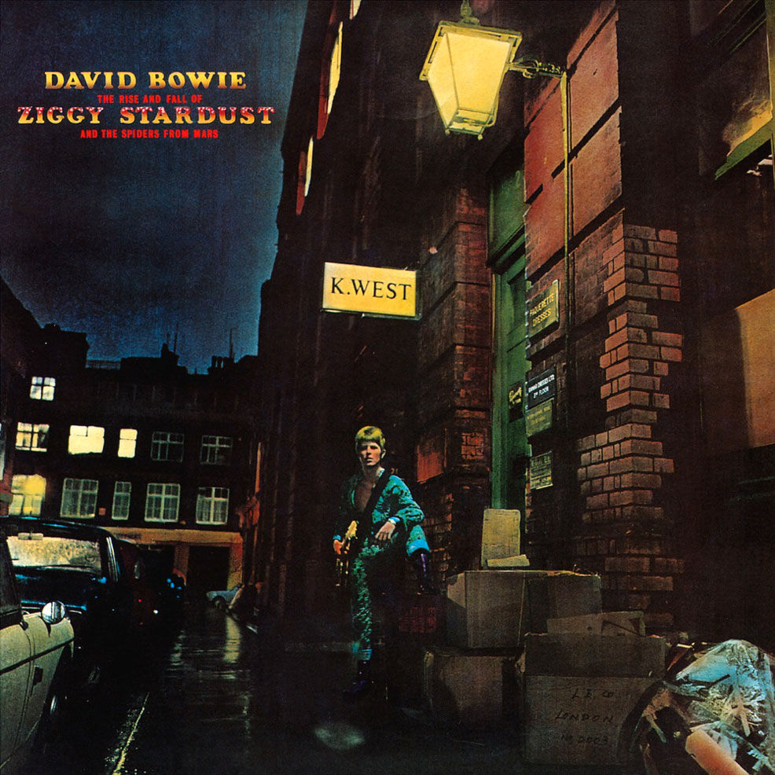

The Rise and Fall of Ziggy Stardust and the Spiders from Mars (en español, El ascenso y la caída de Ziggy Stardust y las arañas de Marte) o también conocido simplemente como Ziggy Stardust, es el quinto álbum conceptual publicado por David Bowie en 1972. Fue el disco con el que el artista consiguió llegar a las grandes audiencias y está considerado uno de los mejores álbumes de su carrera y el más representativo del glam rock. También ha sido incluido en la mayoría de las listas de los mejores discos de la historia del rock que elabora la prensa especializada y ha influido a numerosos grupos y artistas desde que se publicó
